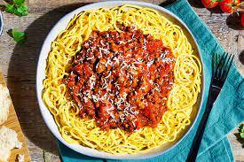

Our quick and easy spaghetti Bolognese recipe is an Italian classic with a rich tomato-based sauce.
Prepared in just 10 minutes, this delicious spaghetti Bolognese is the perfect midweek dinner for a family of four. This traditional Bolognese is flavored with garlic, oregano, and a hint of Worcestershire sauce. Add a splash of red wine to enhance the flavour of the tomatoes in this dish. Making the Bolognese sauce from scratch is ideal for avoiding excessive quantities of salt and sugar that you sometimes find in shop-bought sauces.
Stir in the tomatoes, beef stock, tomato ketchup or purée, Worcestershire sauce, and seasoning. Bring to the boil, then reduce the heat, cover, and simmer, stirring occasionally, for 30 mins.
Meanwhile, cook the spaghetti in a large pan of boiling, salted water, according to packet instructions. Drain well, run hot water through it, put it back in the pan, and add a dash of olive oil, if you like, then stir in the meat sauce. Serve in hot bowls and hand round Parmesan cheese, for sprinkling on top.